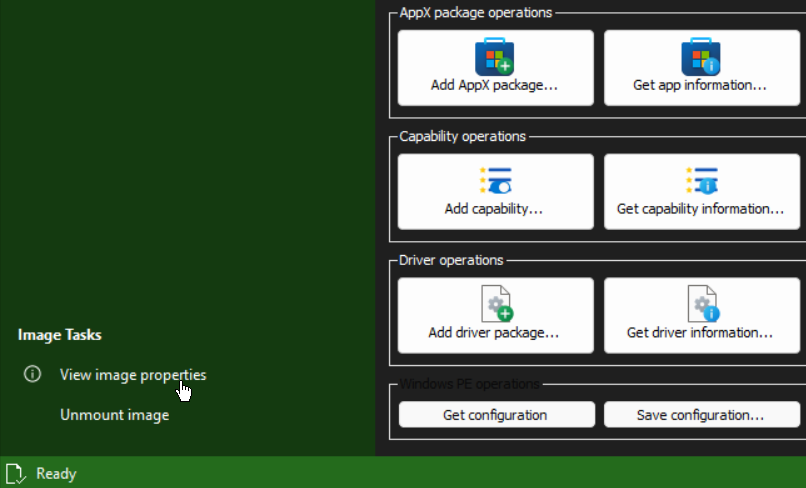
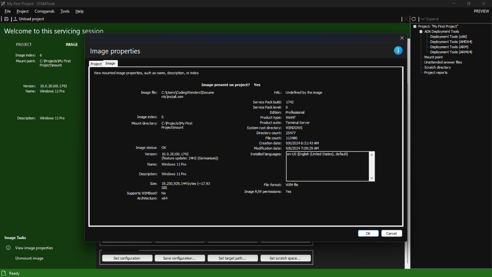
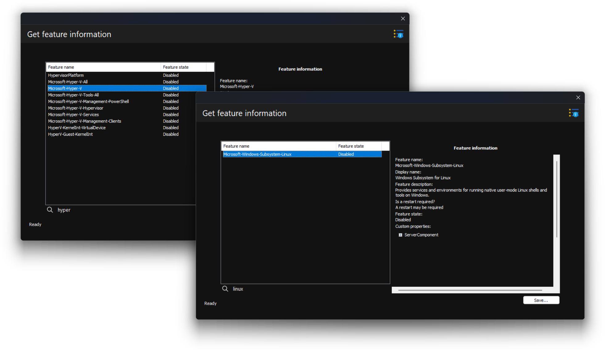
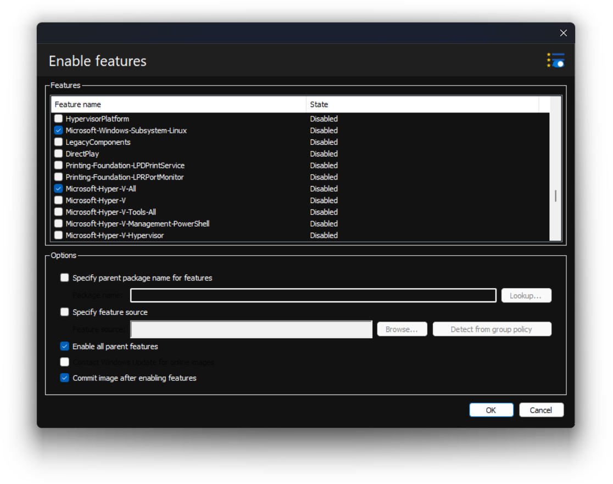
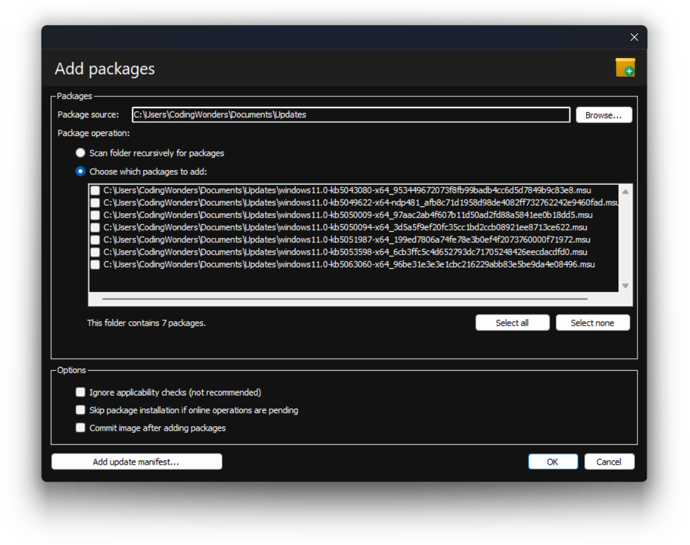
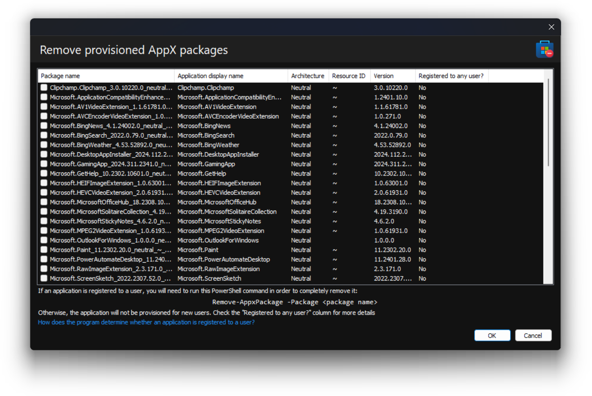

Let's make your Windows image yours.
Getting to know our mounted image
Before proceeding to modify our Windows image, we'll first grab some information from it, so that we know what we are working on. This can be done with the plethora of information dialogs available in this program. We'll get general information about our image, such as its name, and its size, by going here (switch to the IMAGE section on the left side first):
We'll see the following information:
This information will be updated after committing our image, but we'll start making changes first.
Modifying the Windows image to our liking
We'll perform a series of modifications to our Windows image. Let's imagine this example: we are working on a Windows 11 Pro image that we'll then deploy to the computers in our organization. We want the following:
- Built-in support for a Windows Subsystem for Linux (WSL) image and for virtual machines with Hyper-V
- Reduced amount of bloatware, but enough to avoid breaking the target system
The image we're starting with is quite outdated, so we'll update it as well. This tour will separate each task into its own section, so you can follow this process more easily.
Enabling the features
Both Hyper-V and the Windows Subsystem for Linux are features that can be enabled in a Windows image. To see the state they are in, we'll click the "Get feature information..." button. We'll see a list of all features in the image. To narrow down the search results, we simply type our query into the search box, like this:
In this example, both are disabled, so let's enable them. We can do this by clicking the "Enable feature..." button. Afterwards, we select the features to enable, plus any options, and we click OK. In this example, we'll continue with the following options:
Here is a quick summary of the options that were selected:
- Enable all parent features helps us save time by enabling all features related to the ones we selected. For instance, it's quicker to select
Microsoft-Hyper-V-Alland enable this option than selecting all Hyper-V features one by one. Doing the former will automatically enable all of them in one go - Commit image after enabling features will automatically save the changes to our image for us after enabling the features. It's a good option to commit changes after every image task, because it will be easier to revert to an older version if a change doesn't work out
Note:
A feature may appear in this list as being Removed. In that case, you need to provide a source. The source, in many cases, is the sxs folder in Windows installation media. Mount the ISO file and specify the sources\sxs folder in the folder browser dialog. Do this process like this:
In our example, it's not necessary, but it may be when you do it by yourself.
In order for this to work, both your Windows image and the installation media must have the same version. That's why it's recommended to do this first. Otherwise, you'll have to wait until you install your Windows image to enable a feature by using Windows Update, or use updated media.
After the task is done, you can go back to the feature information dialog and check the status of the features you had selected. We will now continue with updating the Windows image.
Adding the packages
Now, let's update our image with the latest update packages. You can download these from the Microsoft Update Catalog. After this is done, we'll click the "Add package..." button. Then, select the location your update files are in. Finally, select the ones you would like to install and click OK:
In this example, we want to add all packages that were found. It's best to add packages in small batches, as the operation is quite lengthy, and we'll also commit the changes after each batch. Get your drinks and snacks ready, or do other things, while the task is being done.
Note:
DISMTools supports the addition of both CAB files and MSU files. For more advanced users, it also supports adding independent update manifests.
You can later go to the package information dialog to look at the recently installed packages. You can learn more about this task in the Help documentation.
Removing Store applications
One of the many forms of bloat in Windows consists of Store applications that you may not want. While you can remove these after installing the system, you can also install the OS with those applications already removed. To do this, we'll click the "Remove AppX package" button. In this dialog, we select the applications to remove and we'll click OK:
Note:
Be sure to know what you will remove. More system components in Windows rely on some of these applications these days, and you may break them if you're not careful. You can look up the names of the applications, which you can find in the second column, online to determine if you want to remove them.
You can perform more tasks if you want, but we'll continue with the final step: operating system deployment.
I've done it. Now what?
After customizing your image, you can continue in 2 ways:
- On your own, or
- With help from the remaining Stage of this tour
If you want to continue with the tour, click the Stage 3 button on the top right to go to its text version.
If you want to continue with the tour using the video format, click here.
If you got lost in some steps, you can go back to Stage 1. Then, proceed to Stage 3.